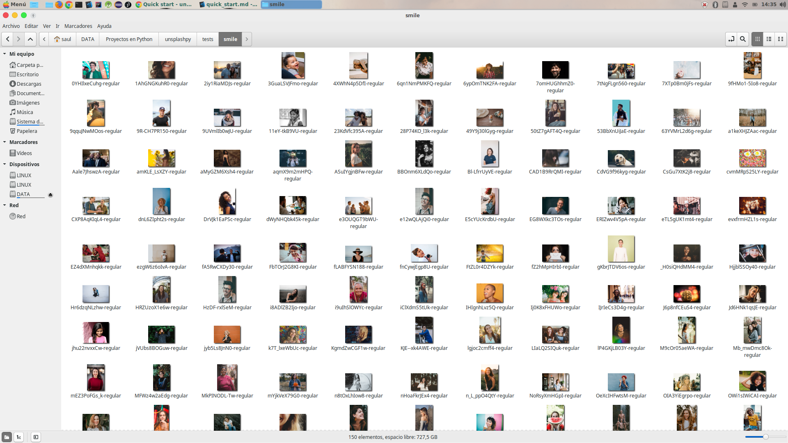

Quick start
You can start trying out how this module works by importing the Unsplash class, which will help you with some regular user actions. In this case, you are goind to search for a keyword and then download a certain number of image pages of that results. By default, there are 30 images per page.
from unsplashpy import Unsplash # Instantiate the Unsplash class u = Unsplash() search_text = input('Tell me what are you searching for: ') # Search something u.search(search_text) num_pages = input('Pages to download [10]: ') num_pages = 5 if num_pages == '' else int(num_pages) image_size = input('Image size to download [regular]: ') image_size = 'regular' if image_size == '' else image_size u.download_last_search(num_pages=num_pages, image_size=image_size)
Let's see how this works:
Tell me what are you searching for: smile There are 4931 photos and 165 pages for searching text "smile" Pages to download [10]: 5 Image size to download [regular]: Got 150 images in 9.243408918380737 seconds (16.227779310046692 images per second)
As you can see above, it downloaded 150 images in 9.2 seconds, that's thanks to threading features included in the module. A total of 16.2 images per second. And here's the output:
